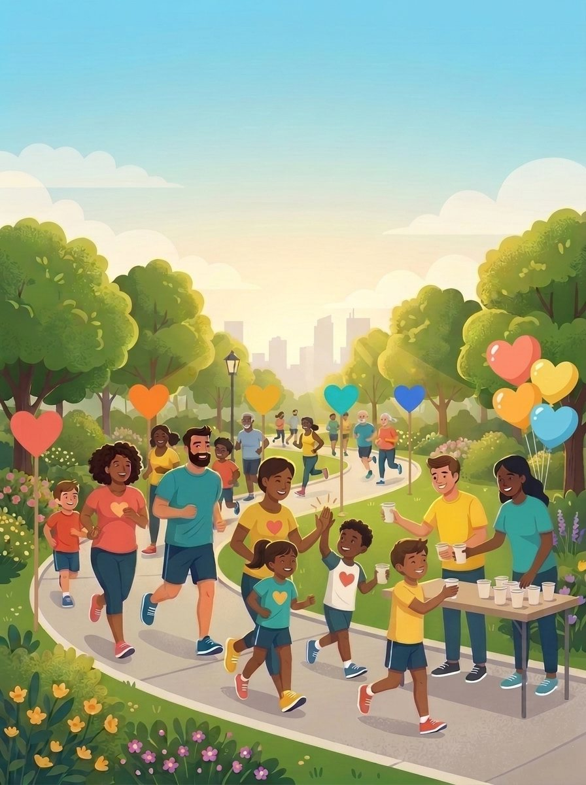

ชื่องาน
วิ่งเพื่อน้อง 5K — งานวิ่งการกุศล 5 กิโลเมตร
คำโปรย
ก้าวไปด้วยกัน 5 กิโลเมตร เพื่อมอบโอกาสทางการศึกษาให้เด็กๆ

วันเวลา
วันอาทิตย์ที่ 25 มกราคม 2569 · ปล่อยตัว 06:00 น. (ลงทะเบียนเริ่ม 05:00 น.)
สถานที่
สวนสาธารณะเบญจกิติ กรุงเทพมหานคร (จุดปล่อยตัวบริเวณลานหน้าสวน)
จุดเด่น
- รายได้ทั้งหมดหลังหักค่าใช้จ่ายมอบให้กองทุนการศึกษาเพื่อเด็กด้อยโอกาส
- เส้นทางเรียบ ปลอดภัย เหมาะกับทุกวัย ทั้งนักวิ่งมือใหม่และครอบครัว
- ผู้เข้าเส้นชัยทุกคนรับเสื้อวิ่งและเหรียญที่ระลึก พร้อมอาหารเช้าและน้ำดื่ม